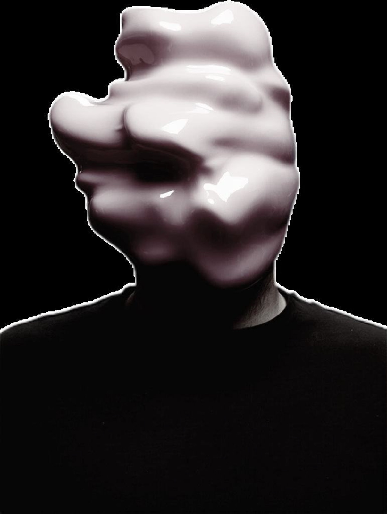
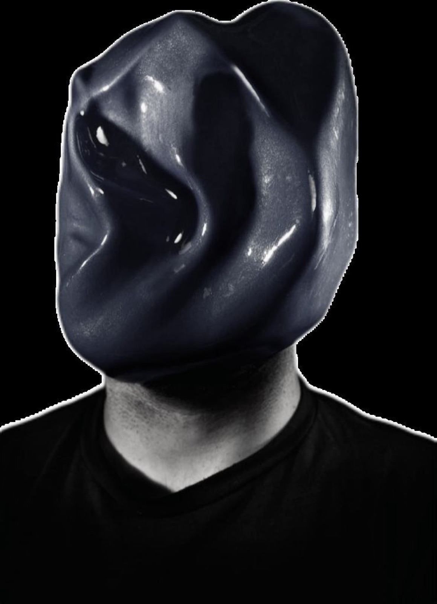

Zach Blas – Facial Weaponization Suite
De-characterization through obscured, composite faces resists biometric legibility — a refusal this project borrows and inverts, staying legible enough to unsettle rather than disappear.